Установка, настройка и использование KVirc05.06.2007
Содержание :
- Установка KVirc.
- Установка чата KVirc.
- Установка дополнительных скинов для KVirc.
- Первый запуск.
- Мастер настройки.
- Первая загрузка чата.
- Настройка.
- Настройка сервера и каналов.
- Дополнительные опции.
- Внешний вид и шкуры.
- IRC-протокол.
- Полезные "фишки" IRC-чатов и отличия от обычных чатов.
- FAQ - наиболее часто задаваемые вопросы и ответы на них.
- Когда приходит сообщение нет никакого звука. Я хочу, чтоб было как в аське/насси - пришло сообщение и прозвучал звук. Как это сделать?
- Как отправить личное сообщение человеку?
- Как отправить человеку файл?
Установка KVirc.
Установка чата KVirc.
Для начала запускаем KVIrc-setup.exe (этот файл можно скачать на
http://kvirc.ru). Выбираем язык (russian). После этого усердно читаем лицензионное соглашение и нажимаем кнопку "Принимаю":
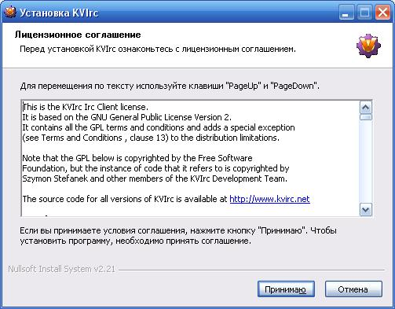
После этого появляется окно с выбором компонентов чата, которые нужно установить:
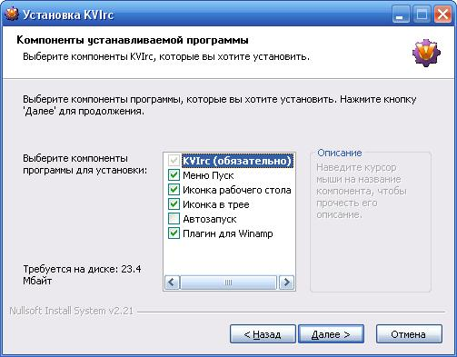
Собственно, значения по умолчанию нас полностью устраивают. Если хотите, чтоб чат запускался сразу после входа в систему (т.е. згружался автоматически), по поставьте галочку "Автозапуск". Плагин для Winamp можно не устанавливать, особенно если используете другой аудиоплеер
")
. В этом окошке жмём "Далее". Следующее окно - путь установки:
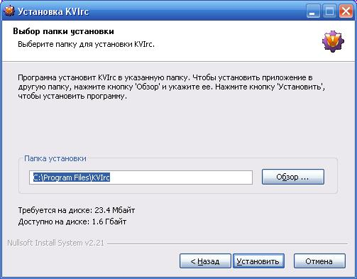
По умолчанию там стоит путь
"C:\Program Files\KVIrc". ОЧЕНЬ настоятельно рекомендую его сменить, например, на "
D:\Chat". Дело в том, что если ваш Windows слетит, то его придётся переустанавливать. При этом может потеряться содержимое папки "C:\Program Files", в том числе и чат. А если вы сохраните чат на другой диск - вам нужно будет всего лишь заново вынести иконку на рабочий стол, даже не нужно будет заново устанавливать и настривать чат.
Жмём кнопку "Установить" и наслаждаемся процессом установки:
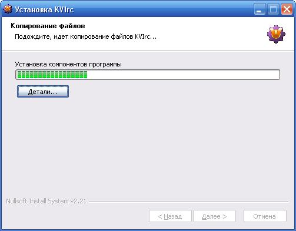
Установка чата завершена:
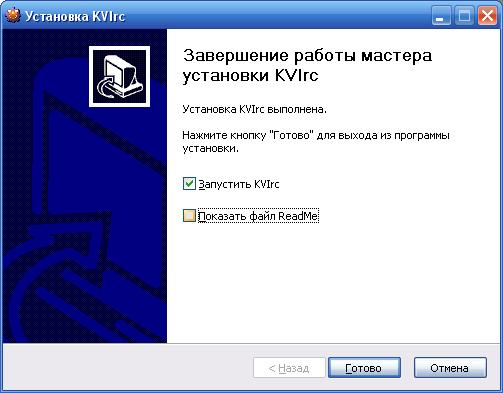
Если не хотите читать ReadMe файл, снимите соответствующий флажок. Флажок "Запустить KVIrc" может оставить включённым, т.к. чат всё-равно ещё нужно настраивать...
Установка дополнительных скинов для KVirc.
Скин [он же "шкурка", он же "тема", он же "внешний вид"] KVirc'a довольно привлекателен. Однако, есть возможность использовать дополнительные скины, сделанные профессиональными дизайнерами. Большой набор скинов можно взять на сайте программы:
http://kvirc.ru или на
http://kvirc.net . Для лучшего отображения на конкретных мониторах скины выкладываются в различных версиях под разные разрешения экрана. Однако, тема от другого разрешения тоже будет работать, правда, не обязательно всё будет красивым и "подогнанным" к размерам
.
Итак, все скины заархивированны. Для их распаковки лучше всего использовать программу WinRAR. В большенстве архивов содержится папка с названием темы, а в ней много всяких файлов типа kvi_*. Это и есть тема, т.е. картинки к ней. Так вот эту папку темы ( папка /DarkBaghira-0.1.2 например ) мы должны кинуть в подпапку
/tmemes чата. Т.е. в папку
D:\themes. Вот моё содержимое данной папки:
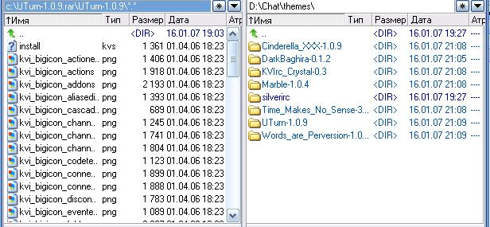
На этом установка скинов завершается. Чуть позже, в настройках, мы научимся изменять вид чата. И выбор будет из тех скинов, которые были скопированы.
Первый запуск.
Мастер настройки.
К первому запуску KVIrc нужно отнестись серьёзно - мастер-настройщик чата появляется только один раз. Все настройки изменить можно и потом, но удобнее это делать в мастере... Итак, перед нами первое окно мастера:
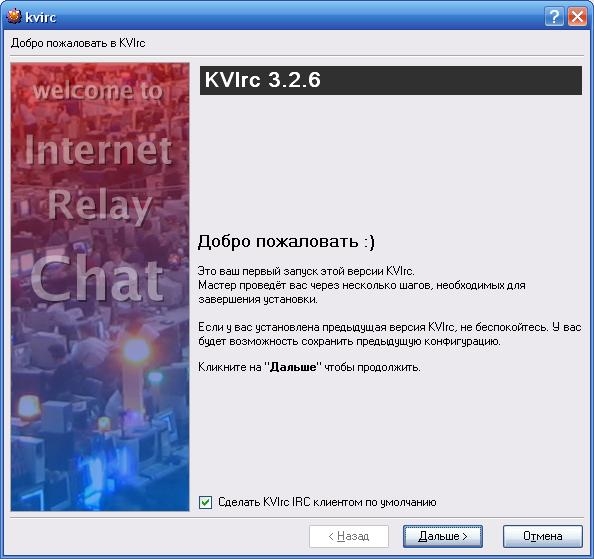
Уже на этой странице мы видем два странных символа - " :) " . Это так называемый смайлик. Он обозначает улыбку и часто за менятеся на изображение "

". Смайлики - неотъемлемая часть любого чата. Используйте их на здоровье!
.
Флаг "Сделать KVIrc IRC клиентом по умолчанию" можно оставить - не думаю, что вам понадобятся ещё IRC клиенты. Жмём "Далее". После этого видим окно, гже можем выбрать способ хранения настроек KVIrc'ом:
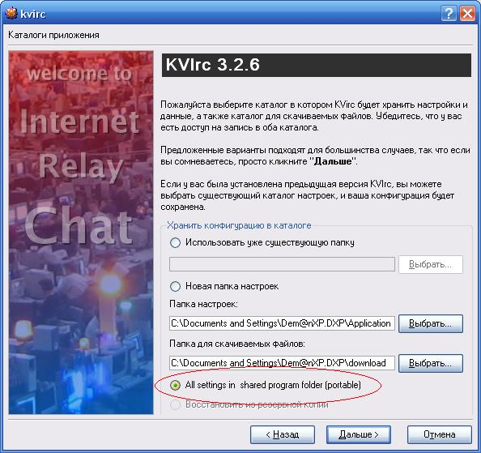
По умолчанию выбрано "Новая папка настроек". И эта папка находится на диске С:\. Это нам не подходит, т.к. мы не хотим, чтоб при полёте винды пришлось настраивать чат снова. Поэтому выбираем "
All settings in shared program folder (portable)" [Все настройки в папке программы (портативно)]. Жмём "Дальше". После этого переходим на окно настроек пользователя:
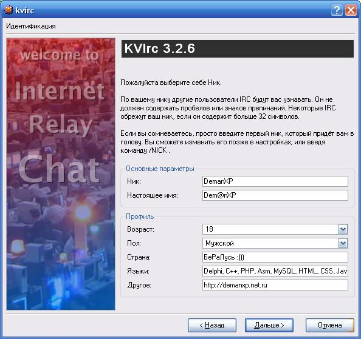
Это окно настроек важно. Здесь вы должны ввести свой "ник" - оно будет показано в чате в качестве вашего имени. Не вводите туда свои имена типа "Dima" или "Alex" - они наверняка уже используются. Будьте орригинальнее. Например, ник:
KPyTblE_СoСKu смотрится очень оригинально и все сразу поймут, что вы настроящий профи-чатлин, а не какой-нибудь серый обыденный ламер Вася... Да, кстати, в поле ник можно использовать ТОЛЬКО символы английского алфавита.
В поле настроящее имя можете вводить своё настроящщее имя ("Саша", "Васёк" и т.п.). Здесь разрешены и буквы русского алфавита.
Остальные параметры не обязательны. Но для более интересного общения советую вам их ввести. Там же можете показать свою оригинальность или интересную информацию о себе. Чем больше введёте - тем интересней будет общаться и больше тем для общения!
Клацаем "Дальше >" и переходим на последнее окно мастера - окно настройки сервера:
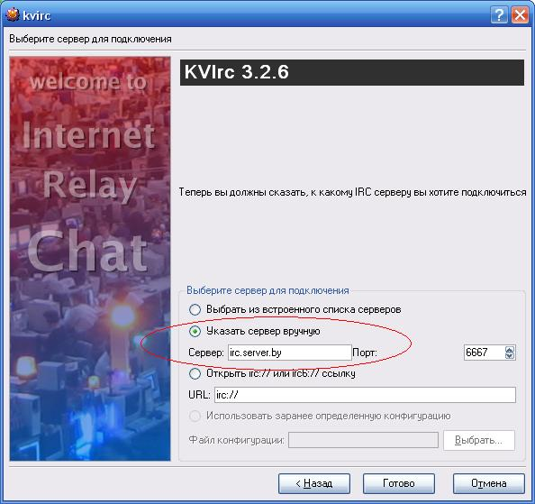
Здесь нужно выбрать "Указать сервер вручную" и ввести IRC-сервер. В нашем случае это "
irc.server.by" [однако, администратором вашей сети могут быть выданы другие данные]. Всё, на этом мастер завершает свою работу. Жмём "Готово".
Первая загрузка чата.
Сразу после нажатия кнопки "Готово" видим окно загрузки чата:
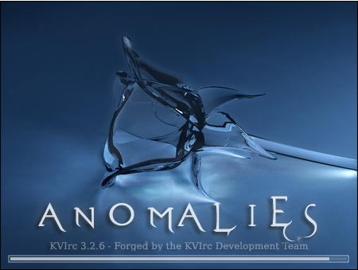
После этого должен появиться сам чат. Должно появиться что-то примерно такое:
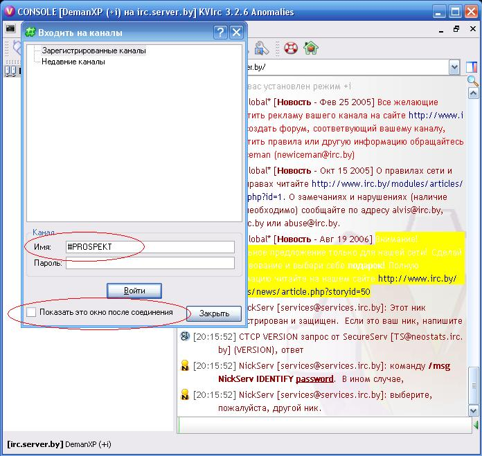
Мы будем настраивать чат так, чтобы сразу при запуске программы мы входили в чат без всяких лишних настроек каждый раз и лишних кликов мышью. Поэтому в окне "Входить на каналы" нам нужно убрать галочку "Показать это окно после соединения". А в поле "Имя" вводим имя канала, к которому будем подключаться: "
#PROSPEKT" [ваш канал будет называться иначе]. После этого кликаем "Войти" и мы на канале.
После этого выйдем из чата. На вопрос, действительно ли хотим выйти из чата, отвечаем "Да":
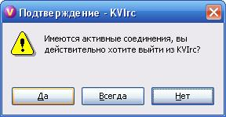
Однако после перезапуска чата появится окно "Серверы":
В этом окне нужно снять галочку "Показать этот диалог при старте". Подробнее про окно "Серверы" мы узнаем чуть ниже.
Настройка
Настройка сервера и каналов.
Окно "Серверы" по умолчанию появляется при загрузке. Также его можно вызвать из меню: "Настройки" -> "Конфигурация серверов...". Вот внешний вид окна:
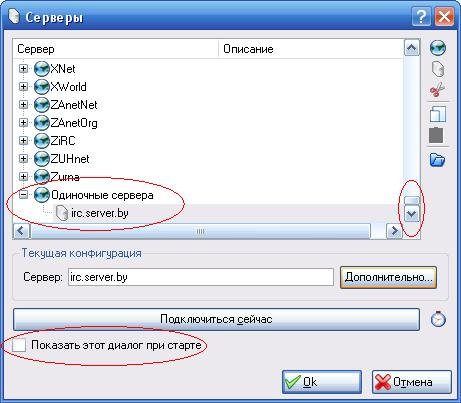
На рисунке видно, что нужно в окне выбора серверов прокрутить скроллом до самого низа и там в одиночных серверах выбрать свой "irc.server.by. Также нам не нужно, чтоб это окно появлялось каждый раз при запуске - снимаем флаг "Показывать этот диалог при старте". Чтобы продолжить настройку, кликаем на кнопку "Дополнительно" и видим следующее окно:
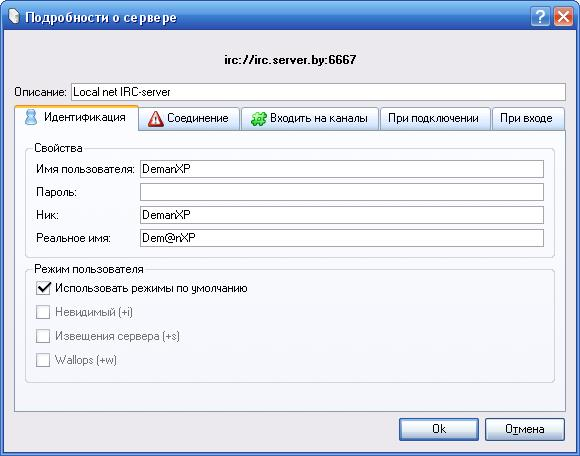
Здесь нам опять нужно ввести некоторые данные пользователя (имя, ник, реальное имя). Поле пароль оставьте пустым. Поле "Описание сервера" сделано для вас и там можете писать, что хотите, что поможет вам понять, какой именно сервер. Я написал "Local net IRC-server". Эти настроки мы вводили на вкладке "Идентификация". Теперь перейдём на вкладку "Соединение":
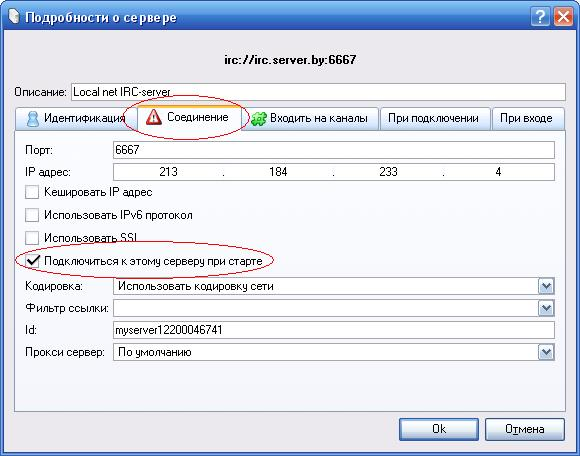
Здесь нам нужно только поставить галочку "Подключаться к этому серверу при старте". Порт должен быть 6667, а IP-адрес сервера должен определиться автоматически. Остальные параметры правильно установлены по умолчанию.
Дальше переходим на вкладку "Входить на каналы":
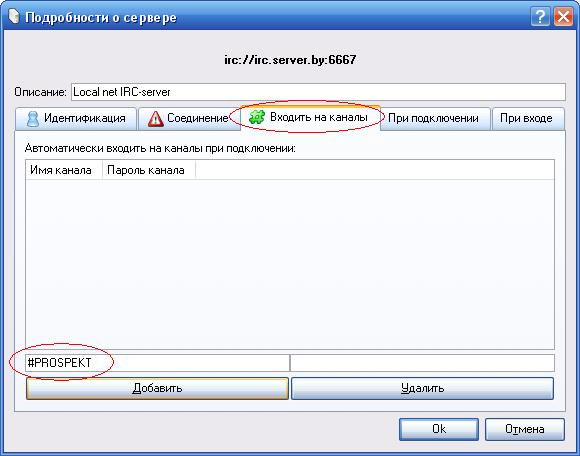
Здесь в левое поле ввода вводим имя канала, на который нужно заходить автоматически (в примере это "#PROSPEKT"). После этого жмём кнопку "Добавить" и наш канал добавится в окошко выше, а кнопка "Добавить" станет недоступна для кликов.
На этом настройка сервера завершена. Кликаем "ОК". Это вернёт нас в окно "Серверы". Там тоже кликаем "ОК".
Всё, основной функционал настроен. Можете перезагрузить чат и увидеть, что сразу после запуска он будет подключаться к нужному серверу, заходить на нужный канал, устанавливать ваш ник. Но для лучшей безопастности и удобства чатинга советую вам проделать также все последующие опции.
Дополнительные опции.
Теперь будем подстраивать квирк под себя. Для этого заходим в меню: "Настройки" -> "Настроить KVIrc..." (Ctrl+Alt+O). Там переходим на вкладку "Идентификация":
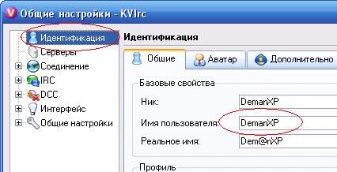
Там нужно сменить "Имя пользователя" с "
kvirc" на свой ник. Это делается в целях безопастности. Далее, по желанию, можно установить свой аватар (картинку, которая будем показывать вас):
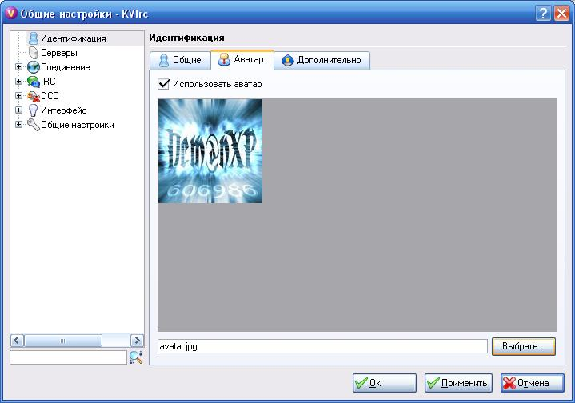
Для этого нужно нажать кнопку "Выбрать" и выбрать свой аватар
. Также по желанию можно подправить данные вкладки "Дополнительно".
Внешний вид и шкуры.
Лично мне не особо нравится картинка при загрузке чата. Точнее, сама картинка - очень даже ничего, но она висит сверху и заслоняет собой остальные окна. Чтобы убрать эту картинку, идем в настройки интерфейса и ставим флажок "Выключить заставку при запуске программы" :
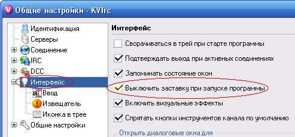
Это не только не будет мозолить глаза, но и прилично ускорит запуск программы.
Также не очень приятно, когда панель хадач захламлена всякими приложениями. Поэтому, сделаем минимизацию чата только в трей:
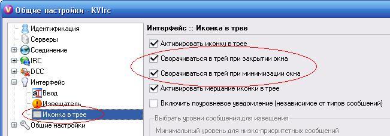
Для этого ставим флажок "Сворачивать в трей при минимизации окна". По желанию можно поставить флажок "Сворачивать в трей при закрытии окна". Но тогда выйти из чата можно будет только через меню, а при нажатии на крест в правом верхнем углу чат будет всего-лишь сворачиваться в трей.
Теперь перейдём непосредственно к шкурам. Для выбора текущего скина нужно выбрать в меню: "Настройки" -> "Управление темами" (Ctrl+Alt+L). Появится окно "Manage themes":
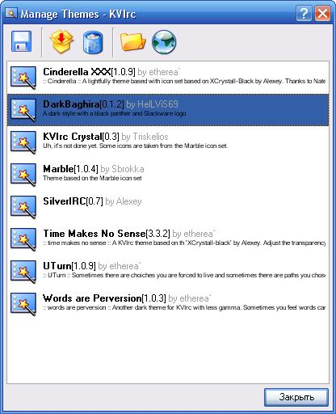
Здесь мы увидим все наши установленные скины. Для выбора скина в качестве текущего нужно всего лишь сделать двойной клик по понравившемуся скину. После это чат спросит нас, установить ли данную тему:
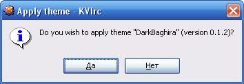
Смело отвечаем "Да" и любуемся установленой шкурой. Для полной установки темы желательно перезапустить чат. Также был замечен баг - иногда за одну загрузку чата шкуру можно сменить только один раз. Если нужно ещё - нужно перезагрузить чат.
У каждой темы свой набор смайлов и свои правила их подсветки. Поэтому очень рекумендую вам сменить тему по умолчанию (SilverIRC) на что-то более красивое. При смене вы также сможете заметить смену подсветки смайликов.
Также хочу заметить, что для удобной вставки смайликов можно воспользоваться горячей клавишей
Ctrl+I или вывести рядом с полем ввода текста панель смайликов. Для этого нужно нажать на зелёную стрелку правее поля ввода текста. Вот, что получилось у меня:
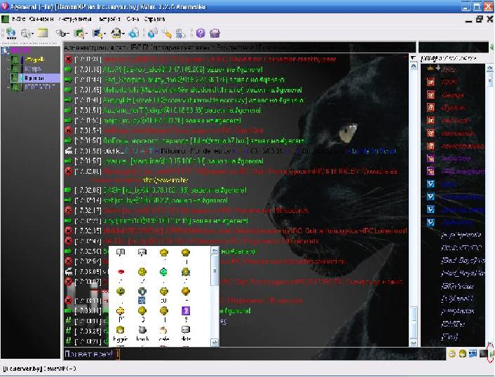
IRC-протокол.
Полезные "фишки" IRC-чатов и отличия от обычных чатов.
IRC довольно сильно отличается от других чатов. Сейчас мы настроили КВирк, чтоб он был максимально похож на Network Assistant - сразу при запуске появляется единственный чат. Но IRC изначально многоканальный чат. Канал - это место, где чатятся люди. Людей обычно много, и чтоб они все не писали в одно место принято разделение на каналы - каналы по теме, по месту и т.п. Например, канал #PROSPEKT - канал нашей сети. И там будут в основном люди из нашей сети и приглашённые.
Итак, некоторые команды IRC-чатов:
Чтоб зайти на канал, пишем:
/join #канал
Пример:
/join #PROSPEKT
/join #amatory
Чтоб покинуть канал, пишем:
/leave
Слапсы - это ваши действия как бы со стороны:
/me громно отрыгнулся и пошёл спать
Это будет выглядеть в чате примерно так:
[21:08:24] DemanXP громно отрыгнулся и пошёл спать
FAQ
Hаиболее часто задаваемые вопросы и ответы на них.
-
Q: Когда приходит сообщение нет никакого звука. Я хочу, чтоб было как в аське/насси - пришло сообщение и прозвучал звук. Как это сделать?
A: VKirc - очень мощная и хорошая программа. Даже то, чего нет стандартно каждый может дописать сам. Это мы сейчас и сделаем. Для этого запускаем "Сценарии" -> "Редактировать события". После этого слева в окне выборов каналов у нас появится новая вкладка - "Редактор событий". Он активируется автоматически. С списке событий находим "OnChannelMessage" (сообщение в канал). Кликаем по нему правой кнопкой мыши. Выпадет менюшка с единственным пунктом - "Новый обработчик". Кликаем на него. После этого у события "OnChannelMessage" появится подпункт - "по умолчанию", а многострочное поле ввода справа автоматически станет пустым. Прежде чем писать какой-либо код в поле ввода, нам нужно сначала выбрать подходящий звук и скопировать в папку программы. Небольшой набор звуков можете взять ЗДЕСЬ. Для своих данных лучше создать подпапку в папке программы. Т.е. создадим в папке D:\Chat папку /my. После этого скопируем понравившийся звук в папку D:\. Пускай нам понравился звук msg.wav. Тогда его полный новый путь (после копирования) будет: D:\msg.wav.
Теперь вернёмся к нашему редактору события и напишем в многострочном поле ввода следующую строку:
snd.play "D:/Chat/my/msg.wav"
Причём заметьте, слэш изменён с обратного на прямой (косая черта в полном пути в windows у нас идёт из левого верхнего угла в правый, а в редакторе мы заменяем на черту из левого нижнего угла в правый верхний), либо каждый обратный слэш ( \ ) можно заменить на два ( \ ):
snd.play "D:\Chat\my\msg.wav"
Жмём кнопку "ОК" и теперь каждое пришедшее сообщение будет сопровождаться выбранным звуком.
Помните, звуковой файл должен существовать, иначе каждый раз будут показываться ошибки.
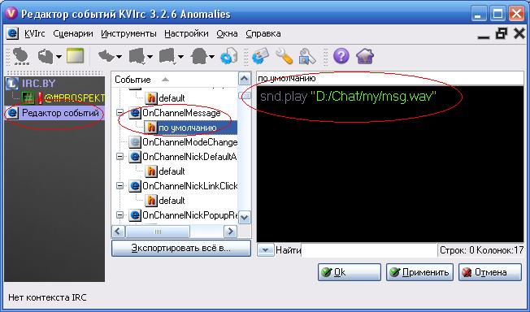
-
Q: Как отправить личное сообщение человеку?
A: Кликнуть правой кнопкой мыши по выбранному человеку: "CTCP" -> "PAGE...". Ввести нужный текст и нажать "Page".
-
Q: Как отправить человеку файл?
A: Кликнуть правой кнопкой мыши по выбранному человеку: "DCC" -> "Отослать *", где вместо * будет ник этого человека. После выбираем нужный файл и он автоматически отсылается.